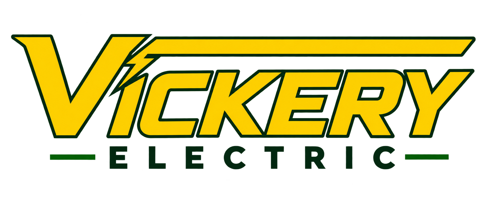

Residential
Repairs, outlets, lighting, fans, upgrades and troubleshooting.

Call 908-309-1624SAFE • RELIABLE • LOCAL
Reliable electrical solutions from a local electrician you can trust.
OUR SERVICES
Repairs, outlets, lighting, fans, upgrades and troubleshooting.
Electrical installation, maintenance, upgrades and repairs.
Improve safety and capacity with professional electrical upgrades.
Indoor, outdoor, decorative and specialty lighting installation.
Troubleshooting and dependable repairs for electrical problems.
Electrical issue after hours? Contact us for emergency service.
WHY VICKERY ELECTRIC?
From everyday electrical repairs to lighting installations and larger projects, Vickery Electric focuses on safe, dependable workmanship and clear communication.
OUR RECENT WORK
Real projects completed by Vickery Electric.
READY TO GET STARTED?
Call, text, or send us a message about your project.